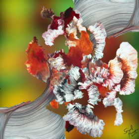

Sapalarang Sining in Filipino, when translated is Random Art in English.
Recent and fairly new, this will be a collection of random generated
abstract art from the software using hand drawn layers influenced by
random algorithmic combinations of those layers, and including purely
hand drawn pieces that will be featured and/or produced in the future.